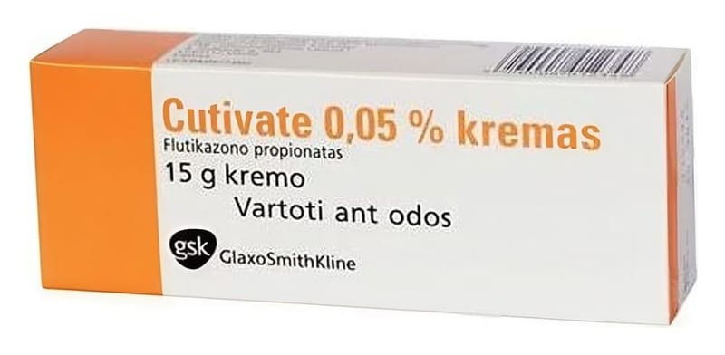

Cutivate % 0,005 Merhem, 30 g

Ne için kullanılır
KT · Bölüm 1CUTIVATE’ın etkin maddesi olan flutikazon propiyonat steroid adı verilen bir ilaç grubuna aittir. Derideki kızarıklık, şişlik ve tahrişin giderilmesine yardımcı olur.
CUTIVATE merhem, beyaz veya beyaza yakın renkte yarı saydam merhem formunda olup, 30 g’lık tüpler halinde bulunmaktadır.
CUTIVATE kortikosteroidlere cevap veren aşağıdaki deri hastalıkların belirtilerinin giderilmesinde kullanılır: Egzama (iltihaplı bir çeşit deri hastalığı) Prurigo nodülaris (şiddetli kaşıntı, ısrarlı döküntü ve kabartılarla kendini gösteren süreğen bir deri hastalığı) Sedef hastalığı Nörodermatozlar (alerjik egzama) Liken planus (deri, deri ekleri ve mukozaları etkileyen iyi huylu deri hastalığı) Seboreik dermatit (genellikle derinin yağlı bölümlerinde görülen iltihaplı ve kaşıntılı bir deri hastalığı) Temas duyarlılığı reaksiyonları Diskoid lupus eritematozus tedavisinde (ciltte pullanmayla kendini gösteren bir hastalık) Sistemik steroid tedavisine ek olarak eritrodermada (şiddetli ve çoğu zaman yaygın kızarıklık durumu)
Böcek ısırmaları İsilik İnfantlarda ve çocuklarda: doktor tavsiyesi doğrultusunda, daha az etkili steroid kremlerine veya merhemlerine yanıt vermeyen dermatitlerde.
CUTIVATE çocuklarda ve 3 aydan büyük bebeklerde daha hafif steroid krem ve merhemlere yanıt vermeyen dermatitler için kullanılır.